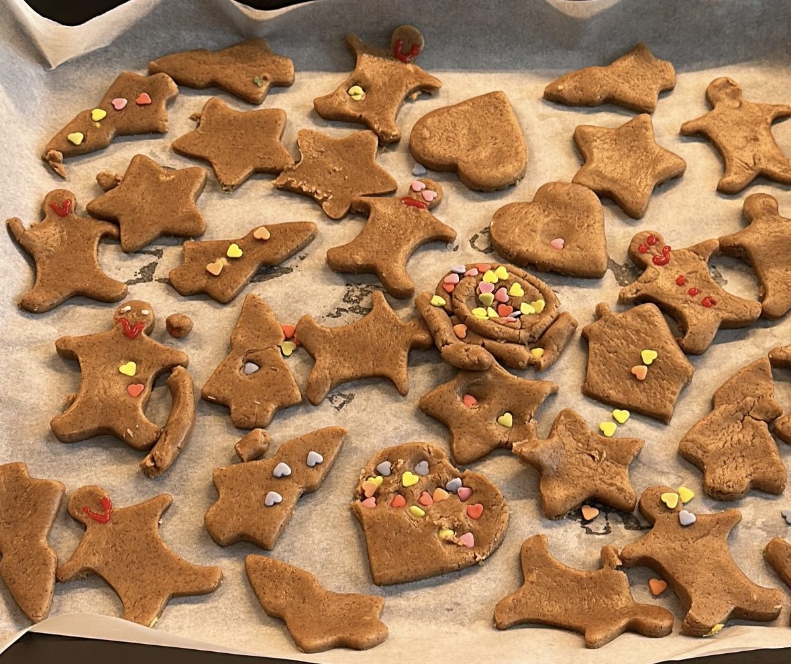
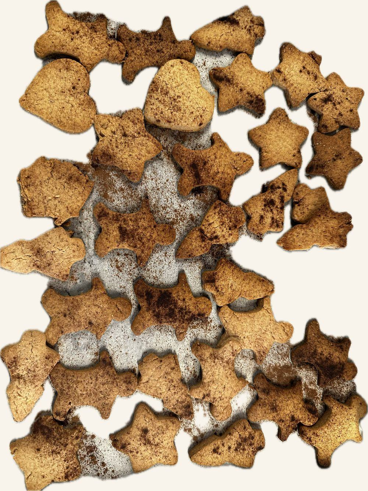
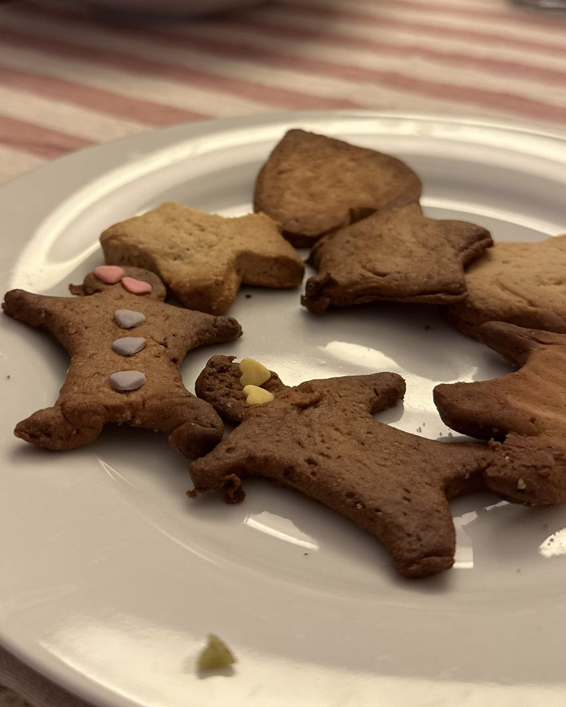

Comida tradicional
alicantina
‹ Todas las recetas
Galletas de jengibre 🍪



Ingredientes
250 g de harina de trigo
100 g de mantequilla blanda (mejor a temperatura ambiente)
100 g de azúcar (blanco o moreno)
1 huevo
1 cucharadita rasa de jengibre en polvo o fresco
1 cucharadita rasa de canela (opcional, pero queda muy bien)
½ cucharadita de levadura química
1 pizca de sal
Preparación
Mantequilla y azúcar.
Mezcla la
mantequilla
con el
azúcar
.
El huevo.
Añade el
huevo
y mezcla.
Los secos.
Incorpora la
harina
, el
jengibre
, la
canela
, la
levadura
y la
sal
. Mezcla hasta que se forme una masa.
Amasar.
Amasa un poco con las manos. Si se pega, añade un pelín más de harina.
Estirar y cortar.
Estira la masa con un rodillo y corta con moldes: muñecos, estrellas, corazones… Es la parte más divertida 🥰
Hornear.
Con el horno precalentado a
180 °C
, hornea
10–12 minutos
, hasta que estén ligeramente doradas.
Dejar enfriar.
Al salir estarán blanditas; al enfriarse se endurecen un poco.